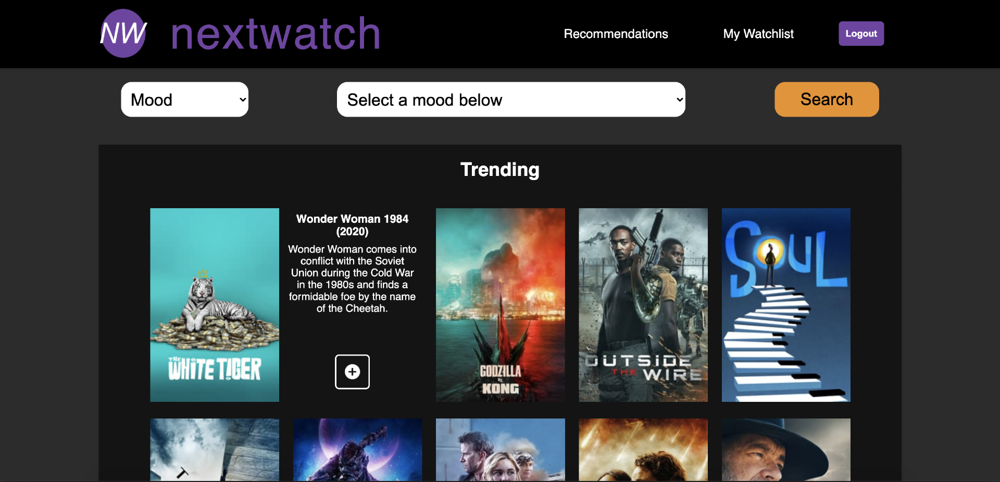
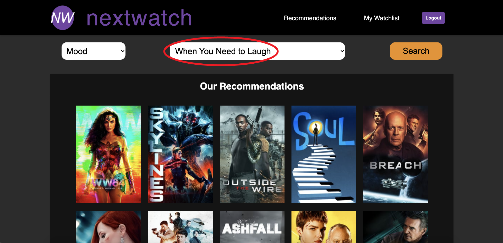
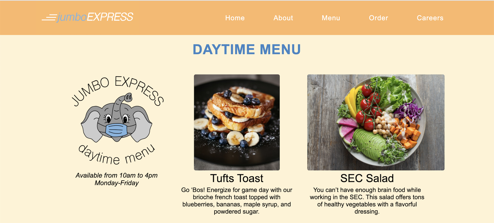

Overview
I started learning to create websites this fall, and since, I have created a few different websites and programs, all of which are mobile responsive.
NextWatch is a web app that recommends movies to users that they can add to a watchlist which is saved to their account. This web app used The Movie Database to access data on genres and actors in movies. I worked with a team to create this app, with the aim of creating a usable interface for customers to save their favorite movies and films that they look forward to watching.
I was in charge of the overal design of the website as well as project management. I worked to create the logos as well as how the functionality can be easily understood. The website is meant to offer enough information that the user does not feel overwelmed, and it only takes the click of one button to add a movie to one's watchlist, which is shown above.
In NextWatch you can either search for movies based on mood or on actors to find recommendations. The search above displays a search under the mood "When You Need to Laugh", which is circled in red. By having these two options, the webapp aims to recommend new movies that users have not seen based on a specific mood or actor.
Jumbo Express is a site created as a mobile and web ordering platform for a ficticious restaurant. I created this website with a team using JavaScript, HTML, CSS, and jQuery, and our goal was to provide a usable interface for customers to order takeout and delivery during the COVID-19 pandemic. We adhered to Norman and Neilsen's 15 Usability Heuristics to keep all information easy to access and understand. We also focused on breaking information up, so none of it was presented in large chunks that would overwelm visitors to the site.
I was in charge of the visual design for this site, and I created all of the logos and mock-ups for the site's creation. I created all logos and graphics on Adobe Illustrator. The elephant logo shown below on the menu page was designed with Tuft's mascot, Jumbo, in mind. I added the mask, since this restaurant was created with social distancing in mind. I selected a color scheme of warm orange and yellow tones that are not overbearing, and I used accents of Tuft's blue for continuity with Jumbo. Overall, the website was created to be a straightforward platform that is mobile responsive.
Above is the daytime menu, which provides descriptions and images of the items that people can order. They are also listed on the delivery page, but we wanted to offer a menu tab with more detail on the food.
This website is my most recent. It was created from scratch as a platform for me to share my work and resume. I also utilized my skills in Adobe Illustrator and Adobe Photoshop to create the graphics for this site.I started with a general idea of wanting to let people understand my experiences and expertise, so the purpose of this page is to convey this.
My first priority in making this website was to make it easy to follow nd simple to understand. Thus, it is very straightforward and features a plain, sleak design, so the content really stands out. I stuck with a clean color scheme and straightforward page layout. I also stuck with shorter paragraphs, so people are not overwelmed with text.
I also made this website mobile-friendly, so it can reach a wider array of people. To do this, I focused on making the horizontal desktop layout into a more vertical, stacked layout.
My first website, though very basic, was designed as a food and lifestyle blog, which I used as a platform to master the fundamentals HTML/CSS and mobile design. While creating it, I emphasized simplicity and ease in navigation.